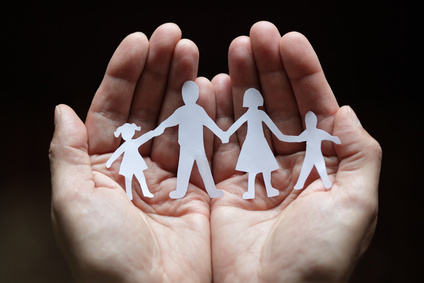

Adoption Made Me Love Superman
June 18, 2014
“Are Superman’s parents aliens, too?”
My nine-year-old brother, Eli, turned to us with curiosity.
“No,” Jonas, my teenage brother, replied. “Superman is adopted.”
Eli’s eyes immediately lit up, and a new obsession was born.
Eli is adopted from South Korea. He was brought home to America when he was seven months old, and every year since then we always celebrate that day as a family. He loves hearing us tell the story about how God had a special plan for our family and how excited we were to hold him for the first time.
I was eleven when Eli was born, and so I recall vividly the lengths my parents went to in order to adopt. They had been talking about it ever since I could remember, but demoralizing obstacles continued to get in their way. Birth mothers who backed out, concerns about parental rights, a baby born who only survived for a few days because of mistakes the mother had made while pregnant all seemed to be standing in the way of a successful adoption. Even as a child I couldn’t help but notice the heartbreak each disappointment caused my parents.
Nevertheless, the call on their hearts to adopt only increased as the years passed. Most of all, I remember my dad getting home from a long day at work and rushing to join my mom at the kitchen table. There they would sift through cascading piles of paperwork, make phone calls, and sort through adoption agencies. Eventually, as American agencies continued to be problematic, my parents turned to international adoption and South Korea.
While most children are born out of a few hours of labor, my brother was brought home only after years of labor.
The joy we felt when we were finally matched with Eli by the agency was inexpressible. My family huddled around the picture of him as a newborn. I remember looking at his picture and knowing, beyond a doubt, that I loved him.
Growing up in a small Midwestern town, people were friendly but occasionally naïve about our experience with adoption. Especially once Eli was home, and people would see us at the store or in the park. My family would receive comments like, “You are so generous to have rescued him from wherever he was before this.”
Questions like these reveal a fundamental misunderstanding of adoption, and as an eleven-year-old, I could never understand what they meant. It was difficult for me to comprehend how anyone could consider this overwhelming blessing in my life to be something as one-dimensional as a “rescue mission” or charity. While adoption is, in ways, a charitable act mirroring God’s compassionate adoption of all Christians into His family, it is also so much more. The lessons and love that come with a new child or sibling are independent of the means by which they are joined with the family. There was never a single moment that Eli was categorized in our hearts or minds as an outside individual whom we just happened to bring into our home. Instead, adoption was simply the medium through which God united us with the next member of our family. Despite years of setbacks in the adoption process, God used each disappointment to lead us closer to a specific agency, at a specific time, so that we were matched with the person He had always intended to be my brother.
Now, nearly nine years later, I indulge Eli’s obsession with Superman and watch the 2013 movie Man of Steel with him on repeat. It’s what sisters do.
And although this caped crusader isn’t necessarily my favorite, there is one part of the movie that always stands out to me: the moment that the young Clark Kent realizes he is adopted. The young boy looks up at the man who’s been raising him his whole life, and with a quivering voice, asks, “Can't I just keep pretending I'm your son?” His father immediately embraces him in a hug, and says firmly, “You are my son.”
The first time Eli saw this scene tears began streaming down his face.
It’s almost impossible to explain the depth of my love for Eli, and how it has no distinction from my love for anyone else in my family. To anyone considering adopting, know that it blesses you in ways you can never imagine. I will forever be grateful that God made our family whole through adoption.